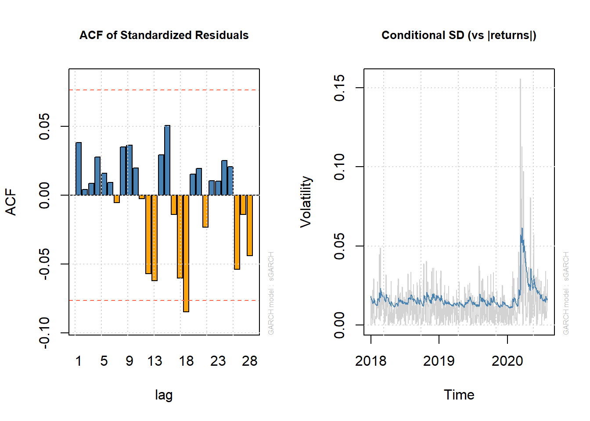

3.3 GARCH(1,1) to forecast VaR
One of the most versatile and capable of them is the rugarch package. Here we use previously introduced asx_ret.RData dataset to demonstrate modelling GARCH using the functions and methods av ailable in the rugarch package.
Fitting a GARCH model using the rugarch package requires setting the model specification using the
ugarchspecfunction.A GARCH(1,1) model with a contant mean equation
mean.model=list(armaOrder=c(0,0)can be specified as follows:
library(rugarch)
garch_spec = ugarchspec(variance.model = list(model = "sGARCH", garchOrder = c(1,
1)), mean.model = list(armaOrder = c(0, 0)))- The above specification stored in
garch_speccan now be used to fit the GARCH(1,1) model to our data. The following code fits the GARCH(1,1) model to BHP log returns using the function and shows the results.
fit_garch = ugarchfit(spec = garch_spec, data = bhp_ret)
# show the estimates and other diagnostic tests
fit_garch
*---------------------------------*
* GARCH Model Fit *
*---------------------------------*
Conditional Variance Dynamics
-----------------------------------
GARCH Model : sGARCH(1,1)
Mean Model : ARFIMA(0,0,0)
Distribution : norm
Optimal Parameters
------------------------------------
Estimate Std. Error t value Pr(>|t|)
mu 0.000738 0.000570 1.2963 0.19486
omega 0.000011 0.000002 6.4001 0.00000
alpha1 0.116153 0.015568 7.4610 0.00000
beta1 0.851010 0.020687 41.1369 0.00000
Robust Standard Errors:
Estimate Std. Error t value Pr(>|t|)
mu 0.000738 0.000650 1.1369 0.25559
omega 0.000011 0.000005 2.1738 0.02972
alpha1 0.116153 0.016538 7.0235 0.00000
beta1 0.851010 0.033380 25.4943 0.00000
LogLikelihood : 1779.839
Information Criteria
------------------------------------
Akaike -5.4307
Bayes -5.4033
Shibata -5.4308
Hannan-Quinn -5.4201
Weighted Ljung-Box Test on Standardized Residuals
------------------------------------
statistic p-value
Lag[1] 0.9655 0.3258
Lag[2*(p+q)+(p+q)-1][2] 0.9710 0.5078
Lag[4*(p+q)+(p+q)-1][5] 1.2420 0.8029
d.o.f=0
H0 : No serial correlation
Weighted Ljung-Box Test on Standardized Squared Residuals
------------------------------------
statistic p-value
Lag[1] 0.8896 0.3456
Lag[2*(p+q)+(p+q)-1][5] 2.5900 0.4870
Lag[4*(p+q)+(p+q)-1][9] 7.1948 0.1834
d.o.f=2
Weighted ARCH LM Tests
------------------------------------
Statistic Shape Scale P-Value
ARCH Lag[3] 0.00146 0.500 2.000 0.9695
ARCH Lag[5] 0.28728 1.440 1.667 0.9436
ARCH Lag[7] 5.74570 2.315 1.543 0.1593
Nyblom stability test
------------------------------------
Joint Statistic: 9.7148
Individual Statistics:
mu 0.0307
omega 1.0222
alpha1 0.2130
beta1 0.1231
Asymptotic Critical Values (10% 5% 1%)
Joint Statistic: 1.07 1.24 1.6
Individual Statistic: 0.35 0.47 0.75
Sign Bias Test
------------------------------------
t-value prob sig
Sign Bias 0.1060 0.91565
Negative Sign Bias 2.1236 0.03408 **
Positive Sign Bias 0.3336 0.73877
Joint Effect 6.6024 0.08571 *
Adjusted Pearson Goodness-of-Fit Test:
------------------------------------
group statistic p-value(g-1)
1 20 27.96 0.08426
2 30 40.77 0.07210
3 40 55.72 0.04018
4 50 67.10 0.04385
Elapsed time : 0.1654358 - Selected fitted statistics can be obtained using various methods available to the
ugarchfitobject class
par1 = par() #save graphic parameters
par(mfrow = c(1, 2))
# generate plots using the which argument Figure-12 1. ACF of
# standardised residuals
plot(fit_garch, which = 10)
# 2. Conditional SD (vs |returns|)
plot(fit_garch, which = 3)

Figure 3.2: Two Informative Plots for GARCH(1,1)